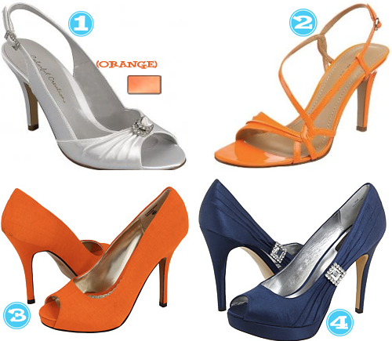

I think these little booties would look super cute with some leggings and a tunic. Â They also look super COMFY!
Nine West Abolone, Zappos

I think these little booties would look super cute with some leggings and a tunic. Â They also look super COMFY!
Nine West Abolone, Zappos

As you know from previous posts, I’m obsessed with boots this winter. Which is weird if you consider I probably won’t be able to get my feet into them come January.Anyway, I’ve managed to acquire several new pairs since last Spring and I have to share what I’m rockin’ right now. (Don’t worry, I didn’t pay this much for ANY of the boots you see here…I got AWESOME deals…you know, the kind of deals that make you tell everyone and their dog how much you actually spent.)
GOOD GOD get these on my feet.
Wouldn’t these be a great transitional sandal for fall? Loving on the grey and the industrial feel to them. I think Sarah will appreciate them too, she was just loving on Nine West!
Nine West has been a go to brand since I was young…my Mom always loved this brand and I’ve come to re-appreciate it in recent years. The main reason for my appreciation? The Prices!!!! EVERYTHING at Nine West goes on sale. Here’s a rule of thumb ladies, if it’s not on sale, wait a few weeks and it will be. (And they’re stuff is good quality too…)
Check out these good finds:
Our first PTAEP was on crossbodies and then we did clutches, both of which are definitely Court’s go-to size of a bag. The rest of us on the other hand need a hobo or bigger in some cases. So here’s our take on the hobo bag at a price you can afford!!

Today’s installment of The Tipsy Wedding Project is Christen’s shoes. While we know what Christen’s dress looks like, she would rather we didn’t post it here because a certain person she is going to marry has been following along and we don’t want to ruin it for him. (I’m talking to you Ed). So anyway, here are our recommendations for Christen and a few for Ed himself. See any trends? 🙂

Next up on the Tipsy Wedding Project front is SHOES! Bridesmaid shoes that is… Something each of us hold near and dear.  Christen is having two maids of honor and they are wearing two different dresses, both in Truffle. Here is one. Here is the other. So here goes with our shoe suggestions….

Tell us your fav!


Recent Comments